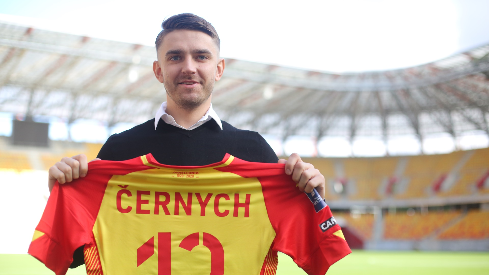
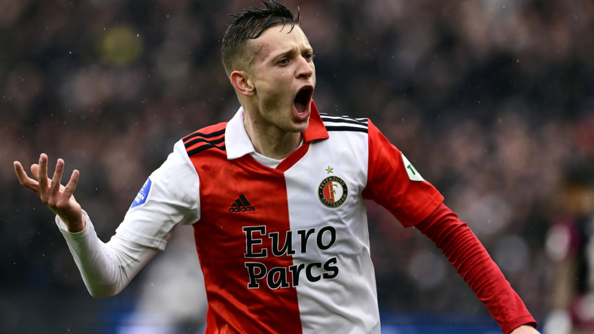
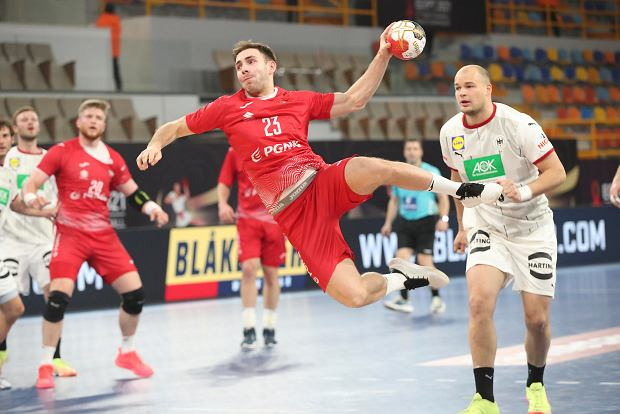
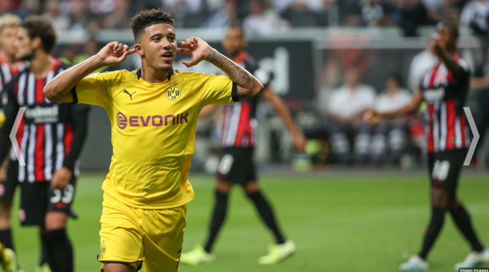
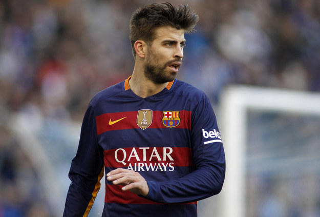
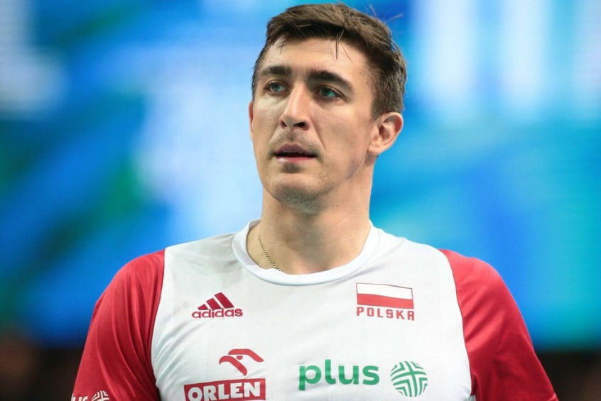
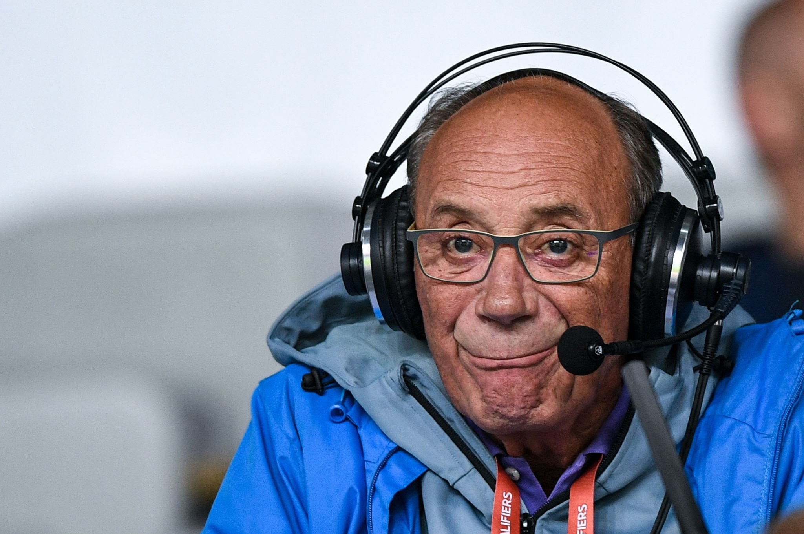

ZASKAKUJĄCY TRANSFER BYŁEGO GWIAZDORA EKSTRAKLASY. ⚽
Fedor Cernych swego czasu był jedną z największych gwiazd Jagielloni Białystok i Ekstraklasy. Do Polski trafił z Białorusi, z Dniepru Mogilevo. Dobrą postawą w Górniku Łęczna zapracował na transfer do Dumy Podlasia, gdzie osiągnął swój szczyt. W sezonie 2016/17 zdobył 13 bramek i zaliczył 9 asyst, dzięki czemu za 400 tysięcy euro trafił do Dynama Moskwa. Od tego momentu zaczął się zjazd 88-krotnego reprezentanta Litwy. Był wypożyczony do Orenburga, a ostatecznie wrócił do Jagielloni. Jedynie pojedynczymi występami nawiązywał do dawnej formy i ostatecznie w styczniu 2023 roku trafił do AEL-u Limassol. Po sezonie w cypryjskim klubie przeszedł do... indyjskiego zespołu Kerala Blasters. Będzie tam jednym z trzech piłkarzy z Europy, obok Czarnogórca Milosa Drincicia oraz mającego francuskie i australijskie obywatelstwo Jaushua Sotirio. Trenerem Keraly jest Serb, Ivan Vukomanović.
Tagi: #piłka nożna
Data publikacji: 10.01.2024 | 19:24:18
Autor: Ksaveriusz
SZYMAŃSKI! ON JEST NIEMOŻLIWY! 🔥
Sebastian Szymański gra kapitalny sezon, potwierdził to w obecnie trwającym meczu. W zaledwie 4 minuty zdobył gola i zaliczył dwie asysty! A to dopiero w pierwszej połowie, druga zaraz się rozpocznie.
GOL: https://twitter.com/TekYolFener/status/1745139862125129912 👈
STATYSTYKI ZAWODNIKA: (transfermarkt)
Mecze: 31 🏟️
Gole: 12 ⚽
Asysty: 13 🅰️
Tagi: #piłka nożna
Data publikacji: 10.01.2024 | 18:58:37
Autor: Xajper
ZNAMY SKŁAD NA MŚ. 6 DEBIUTANTÓW I ZASKOCZENIE. 🤾
W środę Marcin Lijewski, selekcjoner reprezentacji Polski piłkarzy ręcznych, ogłosił 18-osobowy skład na rozpoczynające się mistrzostwa Europy. Zabrakło w nim między innymi świetnego bramkarza - Adama Morawskiego.
- "Gramy w Berlinie i w każdej chwili możemy powołać kogoś z listy rezerwowej." – zaznaczył Marcin Wichary, odpowiadając na pytanie czemu nie 3 powołania dla bramkarzy (trener bramkarzy). 📖
Wcześniej kontuzje wykluczyły z gry w mistrzostwach obrotowego Patryka Walczaka oraz prawoskrzydłowego Arkadiusza Morytę. 🏥
SKŁAD:
Bramkarze: 🥅
Mateusz Kornecki (ThSV Eisenach, Niemcy), Jakub Skrzyniarz (Bidasoa Irun, Hiszpania)
Lewoskrzydłowi: 🪽
Mikołaj Czapliński (Torrelavega BM, Hiszpania), Przemysław Urbaniak (Arged Rebud KPR Ostrovia Ostrów Wlkp.)
Lewi rozgrywający: 🪄
Ariel Pietrasik (Kadetten Schaffhausen, Szwajcaria), Damian Przytuła (Górnik Zabrze), Szymon Sićko (Industria Kielce)
Środkowi rozgrywający: 🪄
Piotr Jędraszczyk (Corotop Gwardia Opole), Michał Olejniczak (Industria Kielce), Paweł Paterek (KGHM Chrobry Głogów)
Prawi rozgrywający: 🪄
Michał Daszek (Orlen Wisła Płock), Jakub Powarzyński (Energa Wybrzeże Gdańsk)
Prawoskrzydłowi: 🪽
Mateusz Kosmala (MMTS Kwidzyn), Jakub Szyszko (Górnik Zabrze)
Obrotowi: 🛡️
Bartłomiej Bis (HSC Coburg 2000, Niemcy), Dawid Dawydzik (Orlen Wisła Płock), Maciej Gębala (SC DHfK Lipsk, Niemcy), Kamil Syprzak (Paris Saint-Germain HB, Francja)
Tagi: #piłka nożna
Data publikacji: 10.01.2024 | 15:01:17
Autor: Xajper
JADON SANCHO WRACA DO BORUSSI! 🤯
Wielki powrót! Sancho do końca sezonu ma grać dla Borussi Dortmund - przekazuje Fabrizio Romano. 23-letni piłkarz zmarnował ostatnie miesiące. Na starcie sezonu wszedł w konflikt z Erikiem ten Hagiem, który wykluczył go z kadry. Anglik zagrał tylko 3 razy. Po raz ostatni wystąpił na murawie w sierpniu.
STATYSTYKI ZAWODNIKA: (transfermarkt)
Mecze: 3 🏟️
Gole: 0 ⚽
Asysty: 0 🅰️
Tagi: #piłka nożna
Data publikacji: 09.01.2024 | 14:45:31
Autor: Xajper
GERARD PIQUE TRENEREM? 🧓
Były piłkarz Barcelony ogłosił za pośrednictwem mediów społecznościowych, że wraca do futbolu.
- "Jest nowy rok i po dokładnym przemyśleniu sprawy, zdecydowałem się wrócić do futbolu. Bardzo za nim tęsknię. Tym razem nie będzie to w roli piłkarza, tylko trenera. Więcej szczegółów podam na koniec tygodnia." 📖
Tagi: #piłka nożna
Data publikacji: 09.01.2024 | 19:35:54
Autor: Xajper
WIELKI POWRÓT, ZNAMY KADRĘ NA POLSKI TURNIEJ! ⛷️
Skład na wiślański etap Polskiego Turnieju został ogłoszony we wtorek przez Polski Związek Narciarski. W kwalifikacjach wystąpi dziewięciu reprezentantów Polski. Wśród nich znajdziemy Klemensa Murańkę, a także Macieja Kota, Dawida Kubackiego, Andrzeja Stękałę, Kamila Stocha, Pawła Wąska, Jakuba Wolnego, Aleksandra Zniszczoła i Piotra Żyłę. 9️⃣

Tagi: #sportwy zimowe, #skoki narciarskie
Data publikacji: 09.01.2024 | 14:55:23
Autor: Xajper
ŁUKASZ KACZMAREK KOMENTUJE KRYTYKĘ NA LEWANDOWSKIEGO. 🏐
Reprezentant Polski w siatkówce w rozmowie z Kanałem Sportowym:
- "Ma słabszy sezon i ludzie się od niego odwracają. Nie podoba mi się to. Tyle zrobił dla kraju, że to naprawdę niesamowite. Był, jest i będzie naszą wizytówką."
- "Każdy kraj chciałby mieć taką ikonę sportu." 📖
Tagi: #piłka nożna
Data publikacji: 08.01.2024 | 11:32:17
Autor: Xajper
HE IS BACK! 🎙️
To już oficjalnie, Dariusz Szpakowski wraca! Nowy prezes telewizji polskiej - Tomasz Sygut - poinformował, że komentator wraca do TVP SPORT. Szpakowski ponownie będzie komentował mecze, dodatkowo Sportowe Fakty donoszą, że legendarny komentator zasiądzie również na stanowisku doradcy Jakuba Kwiatkowskiego - nowego dyrektora TVP SPORT. 🔥
Tagi: #piłka nożna
Data publikacji: 24.12.2023 | 21:08:15
Autor: Xajper